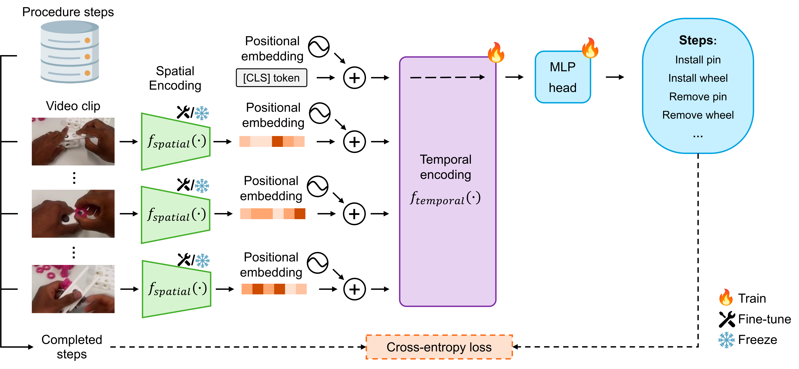
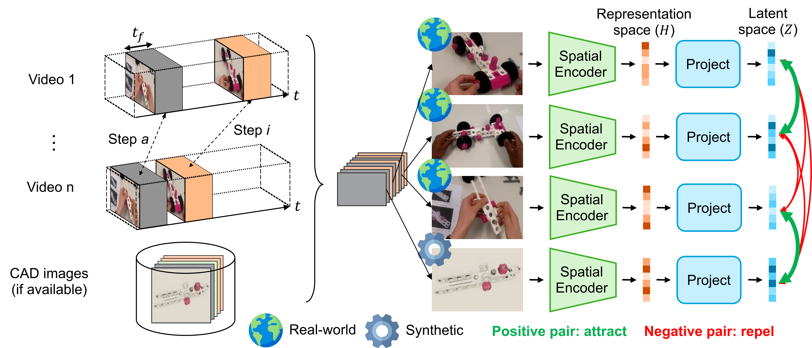

Procedure step recognition (PSR) aims to identify all correctly completed steps and their sequential order in videos of procedural tasks. The existing state-of-the-art models rely solely on detecting assembly object states in individual video frames. By neglecting temporal features, model robustness and accuracy are limited, especially when objects are partially occluded. To overcome these limitations, we propose Spatio-Temporal Occlusion-Resilient Modeling for Procedure Step Recognition (STORM-PSR), a dual-stream framework for PSR that leverages both spatial and temporal features. The assembly state detection stream operates effectively with unobstructed views of the object, while the spatio-temporal stream captures both spatial and temporal features to recognize step completions even under partial occlusion. This stream includes a spatial encoder, pre-trained using a novel weakly supervised approach to capture meaningful spatial representations, and a transformer-based temporal encoder that learns how these spatial features relate over time.
STORM-PSR is evaluated on the MECCANO and IndustReal datasets, reducing the average delay between actual and predicted assembly step completions by 11.2\% and 26.1\%, respectively, compared to prior methods. We demonstrate that this reduction in delay is driven by the spatio-temporal stream, which does not rely on unobstructed views of the object to infer completed steps. The code for STORM-PSR, along with the newly annotated MECCANO labels, is made publicly available.
Procedure Step Recognition (PSR) aims to detect which steps of a multi-step task have been correctly completed, and in what order, from video—often egocentric—of real executions. Unlike generic action recognition, PSR must reason about correctness (not just occurrence), step granularity, and sequential dependencies, while handling noise from hands, tools, and frequent occlusions in industrial and assembly settings.
PSR systems typically combine cues about what objects look like (state changes) but not how they move over time (temporal dynamics). Therefore, in this current work, temporal features are leveraged in addition to spatial features.
For additional context and resources related to PSR, visit the IndustReal.
Our clip-level spatio-temporal stream turns raw egocentric video into step-completion predictions by combining spatial embeddings with temporal reasoning. Each frame in a short clip is encoded by a spatial encoder \(f_{\text{spatial}}\) to produce per-frame tokens; a learnable [CLS] token and 1-D positional encodings are added, and a temporal transformer \(f_{\text{temporal}}\) aggregates the sequence. The final [CLS] state is passed to an MLP head that performs multi-label classification—multiple steps can complete within a single clip. Training uses clip-level supervision derived from the net change in PSR labels between the first and last frame (XOR), optimizing a binary cross-entropy loss. Because the transformer reasons over motion and context, it can fire even when the target object is partially occluded, complementing the state-detection stream and reducing completion delay.

Spatial embeddings plus a [CLS] token feed a temporal transformer; the [CLS] output drives an MLP to predict which steps completed within the clip, with labels computed as the XOR between clip endpoints.
To make \(f_{\text{spatial}}\) robust to occlusions and viewpoint shifts, we introduce Key-Frame Sampling (KFS), a weakly supervised contrastive pretraining centered on step completion moments. For each annotated completion, frames are sampled within a short post-completion window \(t_f\) across many videos (optionally augmented with synthetic CAD renders). A 3-layer projection head \(g(\cdot)\) maps features to \(z\), and a supervised contrastive loss pulls together frames of the same step while pushing apart different steps. This aligns semantically equivalent appearances—hands blocking the object, different lighting, or camera motion—so downstream temporal modeling can recognize completions earlier and more reliably. The pretrained encoder is then frozen or fine-tuned within the spatio-temporal stream during PSR training.

KFS pretrains the spatial encoder with supervised contrastive learning on frames near step completions (and optional CAD images), pulling together same-step views and separating different steps to build occlusion-resilient features.
@article{schoonbeek2025stormpsr,
title = {Learning to recognize correctly completed procedure steps in egocentric assembly videos through spatio-temporal modeling},
journal = {Computer Vision and Image Understanding},
pages = {104528},
year = {2025},
issn = {1077-3142},
doi = {https://doi.org/10.1016/j.cviu.2025.104528},
url = {https://www.sciencedirect.com/science/article/pii/S1077314225002516},
author = {Tim J. Schoonbeek and Shao-Hsuan Hung and Dan Lehman and Hans Onvlee and Jacek Kustra and Peter H.N. {de With} and Fons {van der Sommen}},
keywords = {Computer vision in industrial contexts, Egocentric vision in assistive contexts, Video understanding, Procedure step recognition, Representation learning}
}